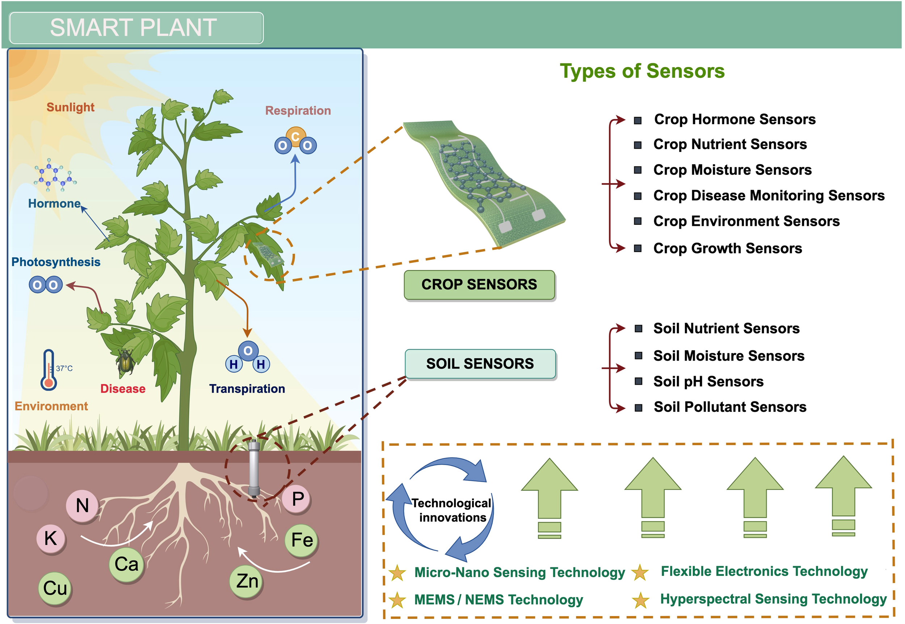
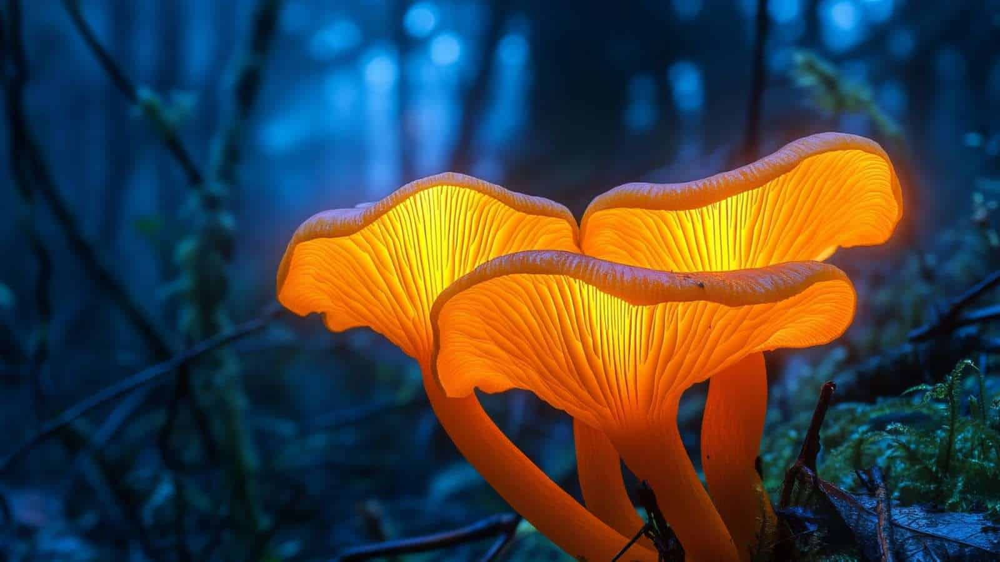

A bioengineered ornamental plant whose petals and leaves shift color based on the emotional state of the nearest human. It uses embedded micro‑sensors and engineered pigment‑cells (“chromaphores”) to interpret stress hormones, micro‑expressions, and ambient biometrics. As of 2035, the VitaBloom plant has been marketed as "the world’s first emotional companion plant."
Background
VitaBloom was created in 2034 by Floradyne Labs, a biotech startup originally focused on agricultural resilience. The breakthrough came when researchers accidentally discovered that modified Calathea orbifolia cells responded to hormonal vapors. The first prototype, VB‑0, was unstable — it turned black whenever someone entered the room. Later versions refined the chromaphores, leading to the commercial VitaBloom VB‑3 launch.

- VitaBloom VB‑3 — The standard consumer model; small, desk‑friendly.
- VitaBloom AuraSeries — Larger plants designed for offices and therapy centers.
- VitaBloom MiniPulse — A pocket‑sized version that reacts faster but has unpredictable color shifts.
- VitaBloom Noir — A rare variant that displays inverted colors; popular among collectors.
Important Vocabulary
- Chromaphores: Synthetic pigment cells that reorganize when triggered by hormonal signatures.
- BioSense Nodes: Tiny organic sensors woven into the stem that detect cortisol, oxytocin, and micro‑temperature changes.
- Emotional Biometrics: Physiological signals that indicate emotional states, such as heart rate variability, skin conductance, and facial micro‑expressions.
- MoodMap Algorithm: A proprietary AI model that interprets signals and determines the plant’s color output.
- RootSync: A soil‑embedded module that logs emotional patterns over time, creating “growth profiles.”
Color Mapping
Colors typically map to: Blue → calm, Yellow → focused, Red → stressed, Purple → excited, White → emotionally ambiguous or overwhelmed
Controversies
- Privacy Concerns — Critics argue that VitaBloom is essentially an emotional surveillance device. Some workplaces banned it after employees complained it revealed stress levels during meetings.
- Mood Misreads — Early models frequently misinterpreted hunger as anger, leading to memes like “Feed your plant before it calls HR.”
- Black‑Market Mods — Underground hobbyists created hacked versions that display custom colors or react to music instead of emotions.
- Therapy Debates — Some therapists swear by VitaBloom as a grounding tool; others say it encourages emotional outsourcing.
Reception and Fandom

VitaBloom developed a cult following online:
- Instagram accounts post daily color snapshots of their plants.
- TikTok challenges involve syncing VitaBloom colors to music playlists.
- Reddit threads debate the “true” emotional spectrum of the plant.